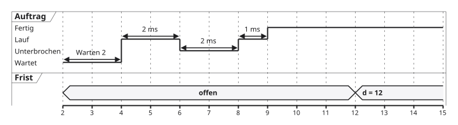
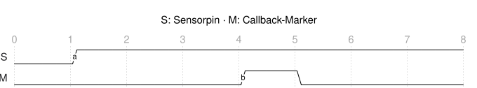
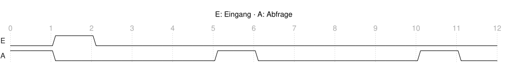
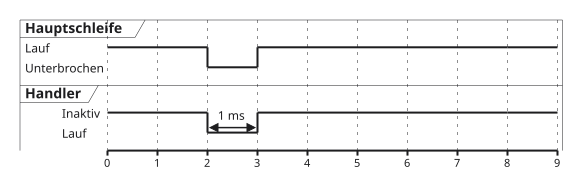

01 · Was ist Echtzeit?
- Ein richtiges Ergebnis braucht den richtigen Zeitpunkt
- Grundlagen, Polling und Interrupts
- Theorie und ein kleiner Versuch auf dem NUCLEO-H755ZI-Q
- Prof. Dr.-Ing. Daniel Klünder · DHBW Stuttgart
Sie beginnen ohne Echtzeit-Vorkenntnisse
- Vorausgesetzt: Funktionen, Schleifen und Variablen in C
- Grundidee eines digitalen Ein- oder Ausgangs
- Neue Begriffe werden an einem Beispiel eingeführt
- Betriebssysteme und mehrere Kerne folgen schrittweise
Was Sie danach begründen können
- Funktion und Rechtzeitigkeit getrennt beurteilen
- Harte, feste und weiche Anforderungen unterscheiden
- Antwortzeit, Rechenbedarf, Latenz und Jitter berechnen
- Polling und Interrupts mit ihren Grenzen vergleichen
- Beobachtungen von einer Zeitgarantie unterscheiden
Vier Schulstunden mit Theorie und Praxis
| Anforderungen und Zeitgrößen · Folien 1–24 |
45 |
| Programmstrukturen und Versuch · Folien 25–50 |
45 |
| Vier Papieraufgaben mit Besprechung |
40 |
| Vorbereiteter STM32-Versuch |
35 |
| Quiz und gemeinsame Klärung |
15 |
| Gesamt |
180 |
Der rote Faden des Kurses
%%{init: {'theme': 'base', 'flowchart': {'nodeSpacing': 30, 'rankSpacing': 25}, 'themeVariables': {'background': '#FFFFFF', 'primaryColor': '#FFFFFF', 'primaryBorderColor': '#E5E5EA', 'primaryTextColor': '#1D1D1F', 'lineColor': '#86868B', 'secondaryColor': '#F5F5F7', 'tertiaryColor': '#FFFFFF', 'clusterBkg': '#F5F5F7', 'clusterBorder': '#E5E5EA', 'edgeLabelBackground': '#FFFFFF'}}}%%
flowchart TD
A[Zeitvertrag] --> B[Arbeit zuteilen]
B --> C[Zusammenarbeit]
C --> D[Mehrere Kerne]
D --> E[Schutz und Projekt]
style A fill:#FFFFFF,stroke:#E2001A,stroke-width:2px !important
Ein durchgängiges Beispiel: Sortierklappe
- Ein Sensor meldet ein Werkstück
- Die Software entscheidet über dessen Weg
- Ein Ausgang gibt den Stellauftrag an die Klappe
- Lehrannahme: Abschluss innerhalb von \(10\,\mathrm{ms}\)
Die Frist und die vereinfachte Strecke sind ein Lehrmodell.
Richtig und rechtzeitig sind zwei Prüfungen
| Fachlich richtig |
Vertrag erfüllt |
Zeitbedingung verletzt |
| Fachlich falsch |
Funktion verletzt |
Beide Bedingungen verletzt |
Echtzeitkorrektheit verlangt Funktion und Rechtzeitigkeit.
Aus „schnell“ wird ein Zeitvertrag
| Beginn |
Freigabe durch erfasstes Sensorereignis |
| Abschluss |
Richtiger Stellauftrag am Ausgang |
| Relative Frist |
\(D=10\,\mathrm{ms}\) |
| Bedingung |
\(f\leq r+D\) |
\(r\): Freigabezeitpunkt · \(f\): Fertigstellungszeitpunkt
Drei Arten von Echtzeitanforderungen
| Hart · Hard |
Kein Miss ist zulässig |
| Fest · Firm |
Spätes Einzelergebnis wertlos, begrenzte Misses können zulässig sein |
| Weich · Soft |
Spätes Ergebnis kann Restnutzen haben |
Die Klasse gehört zur Aufgabe und ihrem Vertrag.
Harte Echtzeit braucht benannte Annahmen
- Sortierauftrag: jeder Abschluss innerhalb von \(10\,\mathrm{ms}\)
- Zulässige Eingangsrate und andere Lasten festlegen
- Jeder Miss verletzt diesen Vertrag
- Fehlerreaktion zusätzlich spezifizieren
Ein schneller Durchschnitt ersetzt keine obere Grenze.
Feste Echtzeit: ein verspäteter Wert verfällt
Lehrvertrag für ein Prüfbild:
- Bild muss vor dem nächsten Verarbeitungsschritt vorliegen
- Späteres Bild wird verworfen
- Höchstens ein fehlendes Bild je 100 Bilder erlaubt
- Mehr Auslassungen verletzen den Gesamtvertrag
Weiche Echtzeit: Qualität nimmt ab
Lehrvertrag für eine Statusanzeige:
- Aktualisierung möglichst innerhalb von \(100\,\mathrm{ms}\)
- Späterer Stand kann noch informativ sein
- Wartezeit und Auslassungen beeinflussen die Qualität
- Zulässige Qualitätseinbußen bleiben messbar festzulegen
Verständnisfrage: drei Aufgaben, ein Gerät
| Stellauftrag |
Kein Miss erlaubt |
| Prüfbild |
Spät wertlos, ein Miss je 100 erlaubt |
| Anzeige |
Später Stand hat Restnutzen |
Ordnen Sie die drei Klassen zu und begründen Sie Ihre Wahl.
Schneller im Mittel, trotzdem zu spät
Lehrwerte für vier Antwortzeiten bei \(D=10\,\mathrm{ms}\):
| A |
1, 1, 1, 17 |
5 |
17 |
| B |
6, 6, 6, 6 |
6 |
6 |
A verletzt eine Frist. Vier Erfolge von B beweisen keine Garantie.
Eine Ausführung auf der Zeitachse
Lehrmodell · Zeit in Millisekunden · Verwaltungsaufwand nicht modelliert

Rechenbedarf ist nicht Antwortzeit
Aus der Zeitachse: \(r=2\), \(s=4\), \(f=9\), \(d=12\) · jeweils in ms
- Eigener Rechenbedarf: \(C=(6-4)+(9-8)=3\,\mathrm{ms}\)
- Startverzug: \(s-r=2\,\mathrm{ms}\)
- Antwortzeit: \(R=f-r=7\,\mathrm{ms}\)
- Fristreserve: \(d-f=3\,\mathrm{ms}\)
Hier gilt \(R\leq D\) mit \(D=10\,\mathrm{ms}\).
Periode und Frist beantworten andere Fragen
- Periode \(T\): Abstand regelmäßiger Freigaben
- Relative Deadline \(D\): zulässige Dauer ab einer Freigabe
- Lehrbeispiel: \(T=20\,\mathrm{ms}\), \(D=10\,\mathrm{ms}\)
- Absolute Deadlines: \(d_k=r_k+D\)
Eine Aufgabe erzeugt mehrere einzelne Ausführungen: Jobs.
Latenz braucht zwei genaue Messpunkte
Lehrskizze · eine horizontale Stelle entspricht \(1\,\text{µs}\)

Flanke bei 1 → Marker bei 4: \(3\,\text{µs}\)
Pin → Marker umfasst mehr als den reinen Ausnahme-Eintritt.
Konstanter Versatz ist noch kein Jitter
Lehrwerte derselben Latenzdefinition:
| A |
5, 5, 5 |
0 ms |
| B |
4, 5, 6 |
2 ms |
Latenzjitter: \(J_L=\max(L_i)-\min(L_i)\)
Periodenjitter und Phasenabweichung trennen
Sollperiode \(T=10\,\mathrm{ms}\) · alle Zeitpunkte in ms
| Soll |
0 |
10 |
20 |
30 |
40 |
| Lehrwerte Ist |
0 |
9,8 |
20 |
29,8 |
40 |
- Istperioden: 9,8 / 10,2 / 9,8 / 10,2 ms
- Periodenspanne: \(0{,}4\,\mathrm{ms}\) · Phasenspanne: \(0{,}2\,\mathrm{ms}\)
Messmaximum ist keine sichere Schranke
| Messmaximum |
Größter bisher beobachteter Wert |
| WCET |
Worst-Case Execution Time unter benannten Annahmen |
| Angesetzte WCET-Schranke |
Begründete obere Grenze des eigenen Rechenbedarfs |
Lehrannahme: Maximum \(80\,\text{µs}\); gegebene Schranke \(120\,\text{µs}\).
Die Konfiguration gehört zum Zeitargument
- Eingaben und durchlaufene Programmpfade
- Übersetzungsoptionen und tatsächliche Takte
- Speicherzugriffe, Cache und Buslast
- Unterbrechungen und Sperrzeiten
- Messpunkte, Messaufwand und Zahl der Läufe
Determinismus heißt hier: begrenzt vorhersagbar
- Laufzeiten dürfen zwischen Ausführungen variieren
- Ihre relevanten Grenzen müssen begründet sein
- Niedriger Mittelwert und ruhiges Blinken reichen nicht
- Fehlende Beobachtung einer Verletzung ist kein Beweis
Eine Fristprüfung braucht die ganze Antwortkette.
Zwischencheck: reicht kurze Rechenzeit?
Lehrfall mit \(D=10\,\mathrm{ms}\):
- Freigabe bei \(r=0\,\mathrm{ms}\)
- Warten bis \(s=9\,\mathrm{ms}\)
- Eigene Rechnung ohne Unterbrechung: \(C=2\,\mathrm{ms}\)
Berechnen Sie \(f\), \(R\) und die Fristreserve.
Polling im C-Kontrollfluss
Lehrcode mit angenommenen Hilfsfunktionen · kein Boardprogramm
for (;;) {
if (SensorauftragLiegtVor()) {
StellauftragAusgeben();
}
AnzeigeBearbeiten();
}
Die nächste Prüfung wartet auf die Rückkehr der Anzeige.
Eine begrenzte Polling-Runde kann reichen
Lehrannahmen: Ereignis bleibt gespeichert, keine Unterbrechungen
| Eingangsprüfung |
0,1 ms |
| Reaktion bei Auftrag |
0,2 ms |
| Anzeige |
5,0 ms |
Runde höchstens \(5{,}3\,\mathrm{ms}\) · sichere Modellabschätzung \(R\leq5{,}5\,\mathrm{ms}\)
Kurzer Puls: verspätet oder ganz verloren?
Lehrmodell · eine Stelle entspricht \(1\,\mathrm{ms}\)

Ein Pegelpoll sieht den Puls zwischen den Abfragen nicht.
Lange Arbeit in kurze Schritte zerlegen
Lehrmodell: Anzeige in fünf Schritte zu je höchstens \(1\,\mathrm{ms}\) zerlegen
- Nach jedem Schritt Eingang prüfen
- Fortschritt der Anzeige zwischen Runden speichern
- Maximale Runde: \(0{,}1+0{,}2+1{,}0=1{,}3\,\mathrm{ms}\)
- Konservative Antwortgrenze: \(R\leq1{,}5\,\mathrm{ms}\)
Die Gesamtanzeige dauert weiterhin mehrere Runden.
Interrupt: Hardware meldet ein Ereignis
- IRQ: Interrupt Request, eine Unterbrechungsanforderung
- ISR: Interrupt Service Routine, die Behandlungsroutine
- Zulässiger IRQ kann die Hauptschleife unterbrechen
- Kern sichert Zustand und setzt ihn nachher fort
- Eine Anforderung bedeutet noch keinen sofortigen Abschluss
Hintergrund wird unterbrochen und fortgesetzt
Ein-Kern-Lehrmodell · Zeit in ms

Basisframe: R0–R3, R12, LR, PC, xPSR
Wer darf einen Handler unterbrechen?
- NVIC: Nested Vectored Interrupt Controller
- Verwaltet anstehende Anforderungen und Prioritäten
- Kleinere Prioritätszahl bedeutet höhere Dringlichkeit
- Maskierung oder höherer Handler können verzögern
- IRQ-Priorität ist noch keine Betriebssystem-Taskpriorität
Preemption Priority und Subpriority
| Preemption Priority |
Darf eine laufende ISR unterbrechen? |
| Subpriority |
Reihenfolge gleichzeitig anstehender zulässiger IRQs |
Gleicher Unterbrechungsrang: kleinere Subpriority präemptiert nicht.
Kurze Handler lassen Zeit für andere Arbeit
- Ereignis behandeln und erforderliche Quelle quittieren
- Nur kleine, begrenzte Reaktion im Handler
- Lange Auswertung und Ausgabe in den Hintergrund
- Keine wartenden Delays oder blockierende Textausgabe
- Dauer und zulässige Ereignisrate gehören ins Budget
Ein gemeinsames Flag kann ein Ereignis verlieren
Lehrfolge auf einem Kern:
| Erstes Ereignis setzt das Flag |
1 |
| Main liest: Auftrag liegt vor |
1 |
| Zweites Ereignis setzt es erneut |
1 |
| Main löscht das alte Merkmal |
0 |
volatile macht Lesen und Löschen nicht zu einem unteilbaren Austausch.
Vordergrund und Hintergrund
Früh erfassen, später bearbeiten
%%{init: {'theme': 'base', 'flowchart': {'nodeSpacing': 30, 'rankSpacing': 25}, 'themeVariables': {'background': '#FFFFFF', 'primaryColor': '#FFFFFF', 'primaryBorderColor': '#E5E5EA', 'primaryTextColor': '#1D1D1F', 'lineColor': '#86868B', 'secondaryColor': '#F5F5F7', 'tertiaryColor': '#FFFFFF', 'clusterBkg': '#F5F5F7', 'clusterBorder': '#E5E5EA', 'edgeLabelBackground': '#FFFFFF'}}}%%
flowchart TD
E[Hardwareereignis] --> I[Kurzer Handler]
I --> P[Gespeicherter Auftrag]
P --> M[Hauptschleife bearbeitet]
M --> A[Geforderter Abschluss]
style P fill:#FFFFFF,stroke:#E2001A,stroke-width:2px !important
Warum später ein Echtzeitbetriebssystem?
- RTOS: Real-Time Operating System
- Verwaltet getrennte Tasks und deren Ausführungszustand
- Scheduler wählt ausführungsbereite Arbeit
- Bietet Hilfen für Zusammenarbeit und Kommunikation
- Die Zeitgarantie benötigt weiterhin einen Nachweis
Board und Anwendungskern
NUCLEO-H755ZI-Q · Mikrocontroller STM32H755ZIT6
%%{init: {'theme': 'base', 'flowchart': {'nodeSpacing': 30, 'rankSpacing': 25}, 'themeVariables': {'background': '#FFFFFF', 'primaryColor': '#FFFFFF', 'primaryBorderColor': '#E5E5EA', 'primaryTextColor': '#1D1D1F', 'lineColor': '#86868B', 'secondaryColor': '#F5F5F7', 'tertiaryColor': '#FFFFFF', 'clusterBkg': '#F5F5F7', 'clusterBorder': '#E5E5EA', 'edgeLabelBackground': '#FFFFFF'}}}%%
flowchart TD
M7[M7: generierter Start] --- B[Busse und Peripherie]
M4[M4: Anwendung] --- B
B --> T[TIM2 und PE1]
style M4 fill:#FFFFFF,stroke:#E2001A,stroke-width:2px !important
Den generierten Dual-Core-Start erhalten
Häufiges Cube-Template · konkrete Projektvariante prüfen
| M4 |
Boot-Benachrichtigung aktivieren, in D2-Stop warten |
| M7 |
Gemeinsame Takte initialisieren, Boot-Freigabe geben |
| M4 danach |
Eigene Peripherie und Anwendung starten |
Boot-Freigabe und spätere Datenübergabe sind verschiedene Aufgaben.
CubeMX konfigurieren, in VS Code entwickeln
%%{init: {'theme': 'base', 'flowchart': {'nodeSpacing': 30, 'rankSpacing': 25}, 'themeVariables': {'background': '#FFFFFF', 'primaryColor': '#FFFFFF', 'primaryBorderColor': '#E5E5EA', 'primaryTextColor': '#1D1D1F', 'lineColor': '#86868B', 'secondaryColor': '#F5F5F7', 'tertiaryColor': '#FFFFFF', 'clusterBkg': '#F5F5F7', 'clusterBorder': '#E5E5EA', 'edgeLabelBackground': '#FFFFFF'}}}%%
flowchart TD
A[CubeMX: Konfiguration] --> B[CM4 und CM7]
B --> C[VS Code: STM32]
C --> D[Bauen und Laden]
D --> E[ST-LINK: Start]
style C fill:#FFFFFF,stroke:#E2001A,stroke-width:2px !important
Generierter Code und eigene Anwendung
- Initialisierung in generierten Dateien erhalten
- Eigene Funktionen unter
code/lab01/
- Aufrufe in vorhandene
USER CODE-Bereiche einfügen
- Keine zweite Endlosschleife in die vorhandene Schleife setzen
- Nach erneutem Generieren Einbindung und Build prüfen
LED-Umschaltung ist nicht der volle Blinkzyklus
Ideales Lehrmodell: Toggle alle \(500\,\mathrm{ms}\)
- Toggle: aus wird an, an wird aus
- Zwei Toggles ergeben einen vollständigen Zyklus
- Zyklusdauer \(=1000\,\mathrm{ms}\), Blinkfrequenz \(=1\,\mathrm{Hz}\)
HAL_Delay(500) wartet im Hauptprogramm
Reale Abstände enthalten Aufrufdauer, Tickauflösung und weitere Arbeit.
Hintergrundlast hat keine bekannte Millisekundenzahl
Vier bereitgestellte Versuchsmodi:
| Baseline |
Delay ohne Zusatzlast |
Main |
| Polling konstant |
feste Zählarbeit und Delay |
Main |
| Polling variabel |
wechselnde Zählarbeit und Delay |
Main |
| Timer |
wechselnde Zählarbeit |
TIM2-Callback |
Der Timer zählt unabhängig von der Schleifenrunde
Timer-Updatefrequenz:
\[f_{\mathrm{UPD}}=\frac{f_{\mathrm{TIM}}}{(PSC+1)(ARR+1)}\]
Nur bei tatsächlichem \(f_{\mathrm{TIM}}=100\,\mathrm{MHz}\):
\(PSC=9999\), \(ARR=4999\) → Update \(2\,\mathrm{Hz}\) → LED-Zyklus \(1\,\mathrm{Hz}\)
Timer und Aufrufkette
Aufrufkette im vorbereiteten M4-Projekt
%%{init: {'theme': 'base', 'flowchart': {'nodeSpacing': 30, 'rankSpacing': 25}, 'themeVariables': {'background': '#FFFFFF', 'primaryColor': '#FFFFFF', 'primaryBorderColor': '#E5E5EA', 'primaryTextColor': '#1D1D1F', 'lineColor': '#86868B', 'secondaryColor': '#F5F5F7', 'tertiaryColor': '#FFFFFF', 'clusterBkg': '#F5F5F7', 'clusterBorder': '#E5E5EA', 'edgeLabelBackground': '#FFFFFF'}}}%%
flowchart TD
A[TIM2-Update] --> B[TIM2_IRQHandler]
B --> C[HAL_TIM_IRQHandler]
C --> D[PeriodElapsedCallback]
D --> E[Lab01_TimerCallback]
style E fill:#FFFFFF,stroke:#E2001A,stroke-width:2px !important
Der kleine Timer-Callback
Aus code/lab01/lab01_demo.c · vollständige Integration im README
void Lab01_TimerCallback(TIM_HandleTypeDef *htim)
{
if (initialized && mode == LAB01_TIMER &&
htim != NULL && htim->Instance == TIM2) {
++lab01_diag.timer_callbacks;
HAL_GPIO_TogglePin(GPIOE, GPIO_PIN_1);
}
}
Ein fairer Vergleich hält Bedingungen fest
| Baseline / Polling konstant |
Build, Takte, LED-Pin |
zusätzliche Last |
| Konstant / variabel |
Auslöser Main |
Iterationsfolge |
| Polling / Timer |
Zielabstand, Build, Board |
Auslöseort |
Vor jedem Lauf Modus wählen, beide Images laden und neu starten.
Ein Messprotokoll benennt seine Grenzen
- Beginn und Ende: etwa zwei aufeinanderfolgende Ausgangsflanken
- Einheit, Trigger, Auflösung und Anzahl der Abstände
- Modus, Build, Takte und andere Lasten
- Minimum, Maximum, Mittelwert und Spanne erst nach Messung
- Beobachtete Periodenspanne ist keine WCET-Schranke
Transfer: eine schnelle Erfassung genügt nicht
Lehrfall mit \(D=3\,\mathrm{ms}\):
- Handler erfasst den Auftrag früh
- Hauptschleife beginnt die Bearbeitung erst nach \(3\,\mathrm{ms}\)
- Bearbeitung braucht weitere \(1\,\mathrm{ms}\)
Ist die vollständige Antwort rechtzeitig? Welche Grenze fehlt im Entwurf?
Mit einem Zeitvertrag in Vorlesung 2
- Funktion und Frist gemeinsam fordern
- Eigene Rechnung von vollständiger Antwort trennen
- Polling und Interrupts unter Annahmen beurteilen
- Beobachtung und Garantie auseinanderhalten
- Nächster Schritt: mehreren Jobs Prozessorzeit zuteilen
Quellen: Buttazzo · Kopetz · ST RM0399, PM0214, UM2408